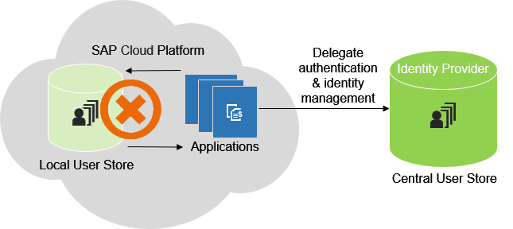
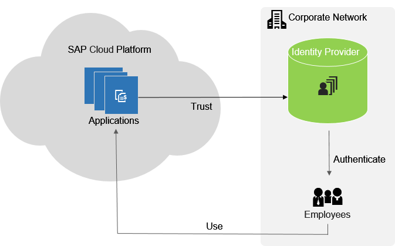

Identity and Access Management
SAP Cloud Platform supports identity federation and single sign-on with external identity providers. The current section provides an overview of the supported scenarios.
To enable you to seamlessly integrate SAP Cloud Platform applications with existing on-premise identity management infrastructures, SAP Cloud Platform introduces single sign-on (SSO) and identity federation features. In SAP Cloud Platform, identity information is provided by identity providers (IdP), and not stored on SAP Cloud Platform itself. You can have a different IdP for each account you own, and this is configurable using the Cockpit.
The following graphic illustrates the high-level architecture of identity management in SAP Cloud Platform.

If you don't have a corporate identity management infrastructure, you can use SAP ID Service. It is the default identity provider for SAP Cloud Platform, and you can use it out of the box, without having to configure SSO and identity federation.
SAP Cloud Platform also allows you to implement applications protected with the OAuth protocol.
SAP Cloud Platform applications can delegate authentication and identity management to an existing corporate IdP that can, for example, authenticate your company's employees. It aims at providing a simple and flexible solution: your employees (or customers, partners, and so on) can single sign-on with their corporate user credentials, without a separate user store and account in SAP Cloud Platform. All information required by SAP Cloud Platform about the employee can be passed securely with the logon process, based on a proven and standardized security protocol. There is no need to manage additional systems that take care for complex user account synchronization or provisioning between the corporate network and SAP Cloud Platform. Only the configuration of already existing components on both sides is needed, which simplifies administration and lowers total cost of ownership significantly. Even existing applications can be "federation-enabled" without changing a single line of code.
The following graphic illustrates this scenario.
- At the service provider of your account in SAP Cloud Platform
- Configuring trust on SAP Cloud Platform to the corporate IdP
- Configuring trust on the corporate IdP to SAP Cloud Platform
You can use Identity Authentication as an identity provider for your applications. is a cloud solution for identity lifecycle management. Using it, you can benefit from features such as user base, user provisioning, corporate branding or logo, and social IdP integration. See Identity Authentication.
Identity Authentication provides an easy way for your applications to delegate authentication and identity management and keep developers focused on the business logic. It allows authentication decisions to be removed from the application and handled in a central service.
SAP Cloud Platform offers solid integration with Identity Authentication. When you request an Identity Authentication tenant for your SAP Cloud Platform account, you can automatically use it as a trusted IdP.
SAP ID service
is the place where you have to register to get initial access to SAP Cloud Platform. If you are a new user, you can use the self-service registration option at
the SAP Web
site or SAP ID Service. SAP ID Service manages the users of
official SAP sites, including the SAP developer and partner community. If you
already have such a user, then you are already registered with SAP ID Service.
or SAP ID Service. SAP ID Service manages the users of
official SAP sites, including the SAP developer and partner community. If you
already have such a user, then you are already registered with SAP ID Service.
In addition, you can use SAP ID Service as an identity provider for your identity federation scenario, or if you do not want to use identity federation. Trust to SAP ID Service is pre-configured on SAP Cloud Platform by default, so you can start using it without further configuration. Optionally, on SAP Cloud Platform you can configure additional trust settings, such as service provider registration, role assignments to users and groups, and so on.
- A central user store for all your identities that require access to protected resources of your application(s)
- A standards-based Single Sign-On (SSO) service that enables users to log on only once and get seamless access to all your applications deployed using SAP Cloud Platform
Roles allow you to control the access to application resources in SAP Cloud Platform, as specified in Java EE. In SAP Cloud Platform, you can assign groups or individual users to a role. Groups are collections of roles that allow the definition of business-level functions within your account. They are similar to the actual business roles existing in an organization.
The following graphic illustrates a sample scenario for role, user and group management in SAP Cloud Platform. It shows a person, John Doe, with corporate role: sales representative. On SAP Cloud Platform, all sales representatives belong to group Sales, which has two roles: CRM User and Account Owner. On SAP Cloud Platform, John Doe inherits all roles of the Sales group, and has an additional role: Administrator.
See Managing Roles.
OAuth 2.0 is a widely adopted security protocol for protection of resources over the Internet. It is used by many social network providers and by corporate networks. It allows an application to request authentication on behalf of users with third-party user accounts, without the user having to grant its credentials to the application. SAP Cloud Platform provides an API for developing OAuth-protected applications. You can configure the required scopes and clients using the Cockpit.
The following graphic illustrates protecting applications with OAuth on SAP Cloud Platform.
SAP Cloud Platform supports two basic OAuth 2.0 flows:
-
Authorization code grant - there is a human user who authorizes a mobile application to access resources on his or her behalf. See Protecting Applications with OAuth 2.0
- Client credentials grant - there is no human user but a device instead. In such case, the access token is granted on the basis of client credentials only. See Enabling OAuth 2.0 Client Credentials Grant
You can use a user store from an on-premise system for user authentication scenarios. SAP Cloud Platform supports two types of on-premise user stores:
-
SAP Single Sign-On
- Microsoft Active Directory